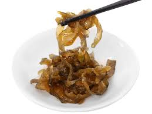

Sáng nay cô bạn gần nhà vừa đi chợ về, ghé qua cho hai trái bắp nấu còn nóng hổi.
Mừng và cảm động quá! Lấy trong tủ lạnh ra cái hủ dưa mắm rồi rửa tay, lột bắp ra cạp ăn với dưa mắm liền. Những hạt bắp mềm, ngọt, kết hợp với miếng dưa mắm giòn giòn, mặn mặn, cay cay, chua chua...Bỗng thấy đời quá đẹp và con người quá tuyệt!

.Vừa ăn vừa suy nghĩ không biết mùa nầy bắp ở dưới quê đã bẻ hết chưa? Cái đám nhóc ở đó có còn đi mót mấy trái bắp bị bù cào ăn, đem theo chén nước mắm mỡ hành, rồi lượm rơm và mấy nhánh me nước gãy về gầy lửa nướng? Không biết ở quê còn trồng cái loại bắp tẻ [loại bắp có hột màu vàng và màu tím pha lẫn. Có trái toàn là màu vàng, có trái toàn màu tím, có trái đủ cả ba màu, vàng, trắng, tím trộn chung rất đẹp], hay chỉ trồng bắp nếp và bắp Mỹ mà thôi?
Mẹ cu Bo ngang nhà qua xin mấy ngọn rau tần dầy lá, thấy tôi ăn dưa mắm liền quở:
-Ăn ba cái thứ nầy dễ lên tăng xông lắm đó cô.
Cổ nhìn cái hũ dưa mắm to đùng rồi hỏi:
-Bộ cô thích ăn dưa mắm lắm hả?
-Ừ.
-Ráng hạn chế đi cô, ba cái mắm nầy ăn nhiều có hại lắm chớ đâu có bổ, béo gì!
Những giọt buồn từ đâu bỗng dưng rơi vào, làm loãng bớt cảm giác hài lòng mà tôi đang có.
Quê tôi nổi tiếng về mắm, kết tội mắm vô tình làm tổn thương cái niềm tự hào âm thầm trong tôi. Một nỗi tấm tức buột tôi phải trả lời cổ, bằng một giọng y chang cái kiểu má tôi cằn nhằn khi gặp điều không ưng ý:
-Quê tôi, ai mà không ăn mắm, ăn từ đời nầy sang đời khác. Một năm ăn mắm hết gần sáu tháng mà đâu có chết chùm vì cái bệnh đứt gân máu đâu? Tôi cãi
-Cô hổng biết đó thôi! Cái bịnh nầy hồi xưa hay gọi là trúng gió. Bà con cứ thấy ai té sùi bọt mép là tưởng gặp gió độc hay bị kinh phong giựt, đè xuống cạo gió không hà. Cho nên hồi xưa có nhiều người bị chết vì trúng gió lắm!
-Tui ăn cũng ít thôi, mỗi ngày gắp vài đũa chắc cũng hổng sao.
-Cô đâu có ăn nó không, còn mấy món khác nữa. Vì vậy nên lượng muối tiêu thụ mỗi ngày sẽ cao lắm, dễ dính vô cái bệnh cao huyết áp lắm nghe!
Tôi nghe cổ nói mà rầu, bởi đối với tôi dưa mắm không chỉ là một món ăn khoái khẩu. Sự hiện diện của nó còn kéo theo cái không gian ngày xưa, mang lại cho tôi một cảm giác êm đềm, ấm áp.
Hồi đó má tôi nổi tiếng về ủ mắm, làm mắm và nhất là trộn dưa mắm. Má tôi không trộn dưa mắm bằng đường cát mà trộn bằng đường chảy. Má thắng cho đường kẹo lại rồi ướp vào dưa mắm đã xắt mỏng [goị là dưa nhưng có khi làm từ đu đủ, ngon nhất là từ những trái dưa gang còn nhỏ, nhờ có vị dòn xốp chớ không cứng như đu đủ]. Những miếng dưa ấy được moi ra từ những gáo mắm cá linh, cá sặc. Nó đã được nhận chung với cá khi chao mắm lần cuối. Nước từ cá rỉ ra ngắm vào từ từ làm nó trong vắt và có màu vàng như mật ong. Má bầm tỏi, ớt sừng trâu [bỏ hột để lấy mùi thơm hơn là vị cay], rồi trộn thật đều, không vắt chanh vào ngay mà trước khi ăn mới cho vô. Trộn xong má cho vô cái keo thủy tinh [ loại keo đựng chao cở lớn] rồi đặt vô cái tô, chế nước chung quanh để bầy kiến cho dù có bắt được mùi đường vẫn không bò vô được.
Dĩa dưa mắm hầu như có mặt thường xuyên trong mỗi bữa ăn. Có khi nó đóng vai chính, có khi hết sức khiêm nhường nằm cạnh những món ăn khác và chỉ được đụng tới vào cuối bữa. Ngày xưa tôi không mặn mà với nó lắm, đôi lúc còn cằn nhằn sao má cứ bắt ăn hoài dưa mắm.
Bây giờ khi tôi đã gắn bó với nó. Khi cái vị của nó không chỉ thấm qua đầu lưỡi mà còn ngấm sâu vào lòng, khơi gợi cả một niềm hoài niệm. Khi những lát dưa mắm vẽ lại con đường của những bầy cá linh mùa lũ, của những trái dưa trên cánh đồng ngập tràn nắng gió, của những bàn tay thoăn thoắt và những bàn chân với những ngón xòe rộng để bám chặt vào đất, của những gương mặt hết sức thân thương thì sá gì một chút nguy cơ mà phải đành từ bỏ nó! Tôi nói để cổ vui lòng:
-Chắc tui nghe theo cô, bỏ bớt mới được.
L D Y